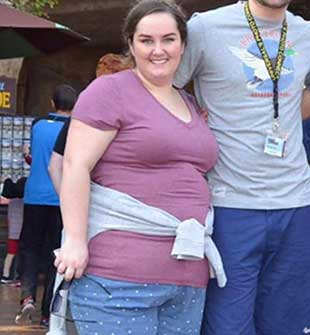
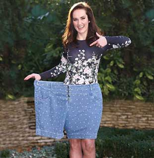

¡EL HIT DE PRIMAVERA! Le preguntamos a nuestras lectoras qué consejos podrían darnos para perder peso
Muchas de las mujeres nos sentimos inseguras por los kilos de más, especialmente cuando es el momento de mostrar nuestros cuerpos en vestidos de verano y trajes de baño, por lo que siempre estamos luchando con los rollos de grasa y las piernas gordas. Al fin y al cabo, ¡los hombres se fijan en chicas delgadas!
Pues bien, es el momento perfecto para dejar los temores y las inseguridades aparte, tal y como hizo una de las mujeres que nos envían sus historias a nuestra oficina. Nos encantó la historia que ella nos envió. Además, es muy motivadora – ¡leedla hasta el final y empezad a ser felices! ¡Os merecéis estar delgadas y guapas!
CÁSATE CONMIGO SIENDO GORDA Y FEA
Siempre me había imaginado cómo quería que fuese mi vida. Quería tener un cuerpo delgado y bonito y casarme con un hombre cariñoso y que estuviese locamente enamorado de mí pero, por supuesto, al principio no fue así. Por aquel entonces, pesaba unos 63 kg y medía 157 cm. Conocí un montón de chicos que no querían casarse conmigo y mucho menos salir con alguien como yo porque no me parecía a una modelo.
Un día, conocí a un hombre muy amable y cariñoso. Se llamaba Pablo. Nuestra relación era muy bonita y romántica. ¡Parecía ser mi hombre ideal! Eso es lo que pensaba antes de que me pasase algo horrible. El caso es que me invitó a la casa de sus padres para conocerlos.
Me tomó un tiempo prepararme para ese encuentro – estaba muy nerviosa. A su padre, Roberto, parecía gustarle. Me preguntó sobre mi vida, mi trabajo, mi familia, etc, pero su madre, Elena, no era tan dulce. Me observó con disgusto y no dijo nada.
Entonces, fui al baño. Cuando volví, escuché cómo Elena estaba tratando de convencer a Pablo de que era una mujer gorda y fea que no le corresponde. Volví a la mesa casi llorando, pero Pablo no mostró ni una pizca de lástima por mí. Eché a correr de esa odiosa casa y olvidé a Pablo para siempre.
Estaba harta de mi sobrepeso y tenía tantas ganas de deshacerme de él lo antes posible. Me puse a buscar un quemagrasas que fuese realmente eficaz.
Nunca me ha gustado ir al gimnasio porque trabajo como gerente y siempre tengo que ir de un lado para otro. Tampoco controlaba lo que comía, por lo que necesitaba un producto natural y seguro.
Finalmente, encontré un producto seguro, simple y muy conocido – . Me gusta el café y no quiero hacer deporte, así que reemplacé todas las bebidas gaseosas que tanto me gustan por . ¡En una semana perdí 3 kg!
2 semanas después – ¡7 kg! Por supuesto, no dejé de comer mi comida favorita. ¡Empecé a sentirme y verme mucho mejor! He conocido a un chico llamado Javier. ¡Él sí que es mi hombre ideal! Me quiere mucho, al igual que su familia y amigos. Ahora por fin soy una mujer feliz, delgada y querida.
Javier me propuso matrimonio hace 4 meses. ¡Qué locura! ¡Nos casamos hace 3 días! ¡Nunca había pensado que podría vivir así, con un hombre ideal, dulce, fuerte y delicado que me quiere y al que le gusta mi delgado cuerpo!
Carlota no fue la única mujer que mencionó en las cartas que llegan a nuestra oficina. Hay toneladas de ellas en nuestro buzón, ¡así que hemos decidido compartir algunas de ellas con todas vosotras!
Nuestro equipo también ha probado este suplemento alimenticio para perder peso. Si queréis hacer lo mismo y perder esos kilos de más de forma rápida y eficaz, haced clic aquí para obtener más información.